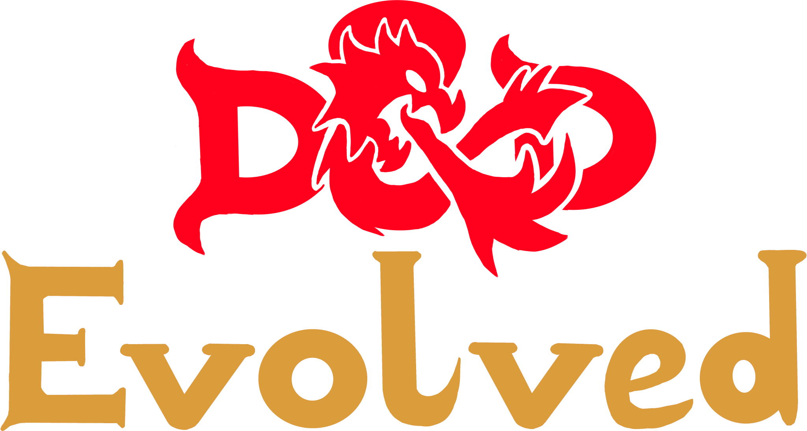

<mat-sidenav-container class="sidenav-container">
    <mat-sidenav #drawer class="sidenav" fixedInViewport [attr.role]="(isHandset$ | async) ? 'dialog' : 'navigation'"
        [mode]="(isHandset$ | async) ? 'over' : 'side'" [opened]="(isHandset$ | async) === false">
        <mat-toolbar>Menu</mat-toolbar>
        <mat-divider></mat-divider>
        <mat-nav-list>
            <div>
                <mat-card *ngFor="let map of DnDMaps">
                    <mat-card-header></mat-card-header>
                    <a mat-list-item [routerLink]="['/event-editing']" [queryParams]="{id:map.Serial}">{{map.Name}}</a>
                  <mat-action-row class="full-width">
                    <button mat-raised-button color="warn" class="expand-button" (click)= "openEditDialog()">Edit</button>
                    <button mat-raised-button color="accent" class="expand-button">Delete</button>
                  </mat-action-row>
                </mat-card>
            </div>
            <mat-divider></mat-divider>
            <div class="center-container">
                <button mat-raised-button color="primary" class="add-map-button">Add Map</button>
            </div>
            <mat-divider></mat-divider>
        </mat-nav-list>
    </mat-sidenav>

    <mat-sidenav-content>

        <mat-toolbar color="primary">
            <button type="button" aria-label="Toggle sidenav" mat-icon-button (click)="drawer.toggle()">
                <!-- *ngIf="isHandset$ | async" -->
                <mat-icon aria-label="Side nav toggle icon">menu</mat-icon>
            </button>
            <!-- <span>DnD-Evolved</span> -->
            
        </mat-toolbar>
        <!-- Add Content Here -->
        <router-outlet></router-outlet>
    </mat-sidenav-content>
</mat-sidenav-container>
